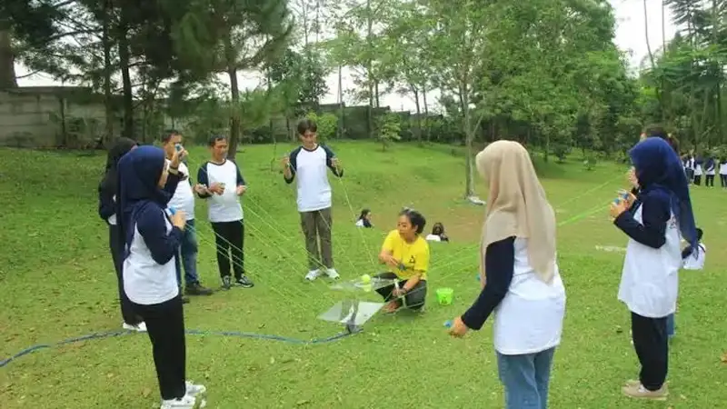

Biaya outbound acara purna tugas dapat bervariasi tergantung jumlah peserta, lokasi, dan tingkat kelengkapan layanan yang digunakan dari penyedia jasa.
- Komponen biaya utama meliputi lokasi, konsumsi, dokumentasi, cendera mata, dan jasa penyelenggara acara.
- Besaran biaya sangat dipengaruhi oleh jumlah peserta dan tingkat kelengkapan layanan yang dipilih.
- Kesalahan umum sering terjadi akibat kurangnya rincian anggaran sejak tahap perencanaan awal.
- Mengabaikan kebutuhan khusus peserta lanjut usia dapat menimbulkan biaya tambahan yang tidak terduga.
- Perencanaan anggaran yang realistis membantu mencegah pembengkakan biaya di tengah pelaksanaan acara.
Apa Saja Komponen Biaya dalam Outbound Acara Purna Tugas?
Komponen biaya utama meliputi sewa lokasi, konsumsi, transportasi, dokumentasi, cendera mata, dan jasa penyelenggara acara apabila menggunakan pihak ketiga.
Sewa lokasi biasanya menjadi komponen terbesar, terutama jika acara diselenggarakan di luar area kantor. Konsumsi perlu disesuaikan dengan preferensi dan kebutuhan kesehatan peserta lanjut usia, misalnya menghindari makanan yang terlalu berat atau pedas secara berlebihan. Transportasi menjadi komponen penting apabila lokasi acara cukup jauh, terutama untuk memastikan kenyamanan peserta selama perjalanan. Dokumentasi dan cendera mata menjadi komponen pelengkap yang menambah nilai kenangan acara, sementara jasa penyelenggara acara mencakup biaya perencanaan, koordinasi, dan pelaksanaan di lapangan.
Faktor Apa yang Memengaruhi Besaran Biaya Acara Ini?
Faktor yang memengaruhi besaran biaya meliputi jumlah peserta, jarak dan jenis lokasi, tingkat kelengkapan layanan, serta apakah keluarga karyawan turut diundang.
Jumlah peserta berbanding lurus dengan biaya konsumsi, transportasi, dan cendera mata. Jarak dan jenis lokasi turut memengaruhi biaya sewa tempat serta biaya transportasi, mengingat lokasi yang lebih jauh umumnya membutuhkan anggaran perjalanan yang lebih besar. Tingkat kelengkapan layanan, misalnya penggunaan dokumentasi profesional atau dekorasi tambahan, juga menambah komponen biaya. Keterlibatan keluarga karyawan dalam acara turut menambah jumlah peserta sehingga perlu diperhitungkan sejak tahap penyusunan anggaran.
Investasi pada pengalaman karyawan seperti ini sejalan dengan temuan bahwa tingkat keterlibatan karyawan secara global cenderung menurun. Laporan Gallup State of the Global Workplace mencatat keterlibatan karyawan global turun menjadi 21 persen pada 2024, sehingga momen penghargaan seperti pelepasan purna tugas menjadi salah satu cara instansi menjaga hubungan baik dengan karyawannya hingga akhir masa kerja, sekaligus memberi contoh positif bagi karyawan aktif yang masih bertugas.
Kesalahan Umum Apa yang Perlu Dihindari Saat Menyelenggarakan Acara Ini?
Kesalahan umum yang perlu dihindari meliputi anggaran yang tidak realistis, mengabaikan kebutuhan khusus peserta lanjut usia, dan minimnya koordinasi dengan pihak keluarga.
Anggaran yang disusun tanpa rincian jelas sering menyebabkan pembengkakan biaya di tengah persiapan, terutama apabila muncul kebutuhan tambahan yang tidak diperhitungkan sejak awal. Mengabaikan kebutuhan khusus peserta lanjut usia, misalnya kebutuhan tempat duduk yang memadai atau akses yang mudah dijangkau, dapat menimbulkan biaya tambahan mendadak sekaligus mengurangi kenyamanan peserta. Minimnya koordinasi dengan pihak keluarga terkait jadwal dan kebutuhan khusus juga kerap menjadi sumber masalah teknis pada hari pelaksanaan. Panduan memilih penyedia jasa yang dapat membantu mencegah kesalahan ini dapat dibaca pada cara memilih penyedia jasa outbound acara purna tugas yang tepat.
Bagaimana Menyusun Anggaran Outbound Acara Purna Tugas yang Realistis?
Anggaran yang realistis disusun dengan merinci setiap komponen biaya sejak awal dan menyiapkan dana cadangan untuk kebutuhan tak terduga.
Panitia sebaiknya membuat daftar rinci setiap komponen biaya, mulai dari lokasi hingga cendera mata, kemudian membandingkan penawaran dari beberapa penyedia jasa apabila menggunakan pihak ketiga. Menyiapkan dana cadangan sekitar sepuluh persen dari total anggaran dapat membantu mengantisipasi kebutuhan tambahan yang muncul mendadak, misalnya perubahan cuaca yang memerlukan penyesuaian lokasi atau kebutuhan medis ringan bagi peserta.
FAQ
Apakah biaya outbound acara purna tugas selalu lebih mahal dibanding outbound biasa?
Biaya tidak selalu lebih mahal, namun komponen biaya cenderung berbeda karena penyesuaian fasilitas dan layanan bagi peserta lanjut usia.
Apakah instansi dapat menyelenggarakan acara ini tanpa menggunakan jasa pihak ketiga?
Instansi dapat menyelenggarakan acara secara mandiri, namun perlu memastikan tim panitia memiliki kemampuan mengelola logistik dan keselamatan peserta secara memadai.
Bagaimana cara mengurangi risiko pembengkakan biaya saat pelaksanaan acara?
Risiko pembengkakan biaya dapat dikurangi dengan menyusun rincian anggaran sejak awal dan menyiapkan dana cadangan untuk kebutuhan tak terduga.
Arya
penulis artikel yang sudah berpengalaman di dalam dunia wisata outbound Batu Malang.